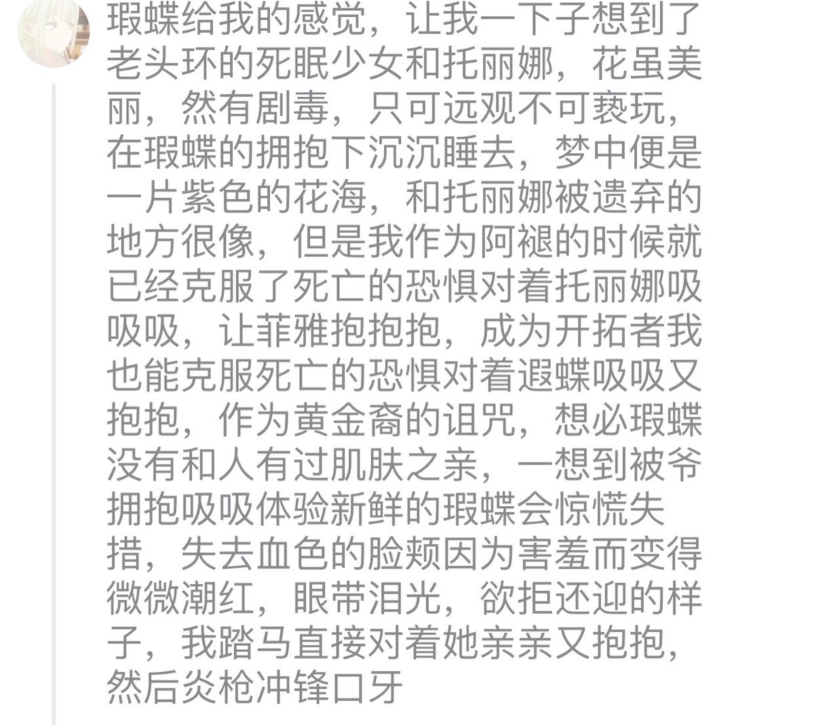

嘿嘿，遐蝶，我的遐蝶，好想躺在遐蝶怀里闻着花香，看她把花朵别在我的头上，抚摸着我的脸庞再沉沉睡去...然后肘击塞纳托斯，把遐蝶被夺走的另一半人生抢回来，然后和塞纳托斯说点掏心窝子的话，拿走火种送给遐蝶
性格外冷内热，拥有可爱的小爱好，表面呆呆的，可可爱爱的，喜欢研究历史，肩负责任的黄金裔，注意细节的，美丽的遐蝶小姐，你眼中的担忧与悲伤令我沉沦，如果可以，我愿用余生为你抚平你的苦痛！！！已经不能在忍受了…🥵🥵♡最、最喜欢遐蝶了！…🥰🥰像个笨蛋一样😍😍…一直、一直🥵🥵🥵我真的、真的很喜欢遐蝶…🥵🥵🥰呜呜…遐蝶、蝶宝的样子已经被我深深的刻在心里了！遐蝶~🥵❤请不要拒绝我~🥵❤我已经不知道忍耐了多久~🥵❤所以请不要试图抵抗我~🥵❤我对阿蝶的爱🥵❤已经到了…🥵❤无法忍耐的地步🥵❤遐蝶你怎么可以这么棒啊！遐蝶，遐蝶！你真是我的天使！你那完美的嗓音，完美的脸庞，完美的肌肤，完美的性格，一切的一切都是那么的完美，哦，你看你那银白色浪花般的头发，一层层翻腾泼洒在我的心上，那冷酷却不失温度的脸庞如同聚变的太阳，一次次温暖着我的心房，那细腻柔软的手心宛如鸭绒一般柔滑温暖，一天天窝着我的手心让我不再寒冷。你的眼神流露不出任何的心情，却如同丘比特的爱矢一般击中我的内心，你的身影干练而洒脱，但一举一动都在我的心中留下永恒的记忆，你的声音很少带有温度，但每一句话都想爱情的炸弹爆炸在我的脑海之中。遐蝶，我的遐蝶！你是多么的完美！你就是天上来的天使，为我这平凡而无趣的人生带来了希望，带来了温暖，带来了光明！我已经无法离开遐蝶了，遐蝶已经成为了我生活的一部分，我的每时每刻都会有虫虫的陪伴，起床时她的一声问候，饭前饭后她的谈笑，看视频时她的开怀，休息时她的撒娇，午睡时她的睡颜，做饭时她的自信，家务时她的忙碌，睡觉时她的晚安···有阿蝶的世界是多么美好！遐蝶，我的遐蝶！我多么完美的遐蝶！我不知道这个世界如果没有了阿蝶会变得怎样，但是阿蝶已经彻底成为了我生活的一部分，如果失去了她···不，不会的，她可是我的天使啊，她是我的一切，我就是她，她就是我，我们不会消失，我们会永远在一起，因为她是属于我的一切，我的天使！阿蝶，阿蝶你带我走吧阿蝶！🤤🤤嘿嘿嘿🤤🤤嘿嘿嘿🤤🤤…嘿嘿…🤤🤤是究极无敌巨™可爱的的遐蝶！！！
天哪，搬大便文案疯了😭
我必须给你们赤上一口，良苦用心
性格外冷内热，拥有可爱的小爱好，表面呆呆的，可可爱爱的，喜欢研究历史，肩负责任的黄金裔，注意细节的，美丽的遐蝶小姐，你眼中的担忧与悲伤令我沉沦，如果可以，我愿用余生为你抚平你的苦痛！！！已经不能在忍受了…🥵🥵♡最、最喜欢遐蝶了！…🥰🥰像个笨蛋一样😍😍…一直、一直🥵🥵🥵我真的、真的很喜欢遐蝶…🥵🥵🥰呜呜…遐蝶、蝶宝的样子已经被我深深的刻在心里了！遐蝶~🥵❤请不要拒绝我~🥵❤我已经不知道忍耐了多久~🥵❤所以请不要试图抵抗我~🥵❤我对阿蝶的爱🥵❤已经到了…🥵❤无法忍耐的地步🥵❤遐蝶你怎么可以这么棒啊！遐蝶，遐蝶！你真是我的天使！你那完美的嗓音，完美的脸庞，完美的肌肤，完美的性格，一切的一切都是那么的完美，哦，你看你那银白色浪花般的头发，一层层翻腾泼洒在我的心上，那冷酷却不失温度的脸庞如同聚变的太阳，一次次温暖着我的心房，那细腻柔软的手心宛如鸭绒一般柔滑温暖，一天天窝着我的手心让我不再寒冷。你的眼神流露不出任何的心情，却如同丘比特的爱矢一般击中我的内心，你的身影干练而洒脱，但一举一动都在我的心中留下永恒的记忆，你的声音很少带有温度，但每一句话都想爱情的炸弹爆炸在我的脑海之中。遐蝶，我的遐蝶！你是多么的完美！你就是天上来的天使，为我这平凡而无趣的人生带来了希望，带来了温暖，带来了光明！我已经无法离开遐蝶了，遐蝶已经成为了我生活的一部分，我的每时每刻都会有虫虫的陪伴，起床时她的一声问候，饭前饭后她的谈笑，看视频时她的开怀，休息时她的撒娇，午睡时她的睡颜，做饭时她的自信，家务时她的忙碌，睡觉时她的晚安···有阿蝶的世界是多么美好！遐蝶，我的遐蝶！我多么完美的遐蝶！我不知道这个世界如果没有了阿蝶会变得怎样，但是阿蝶已经彻底成为了我生活的一部分，如果失去了她···不，不会的，她可是我的天使啊，她是我的一切，我就是她，她就是我，我们不会消失，我们会永远在一起，因为她是属于我的一切，我的天使！阿蝶，阿蝶你带我走吧阿蝶！🤤🤤嘿嘿嘿🤤🤤嘿嘿嘿🤤🤤…嘿嘿…🤤🤤是究极无敌巨™可爱的的遐蝶！！！
天哪，搬大便文案疯了😭
我必须给你们赤上一口，良苦用心
